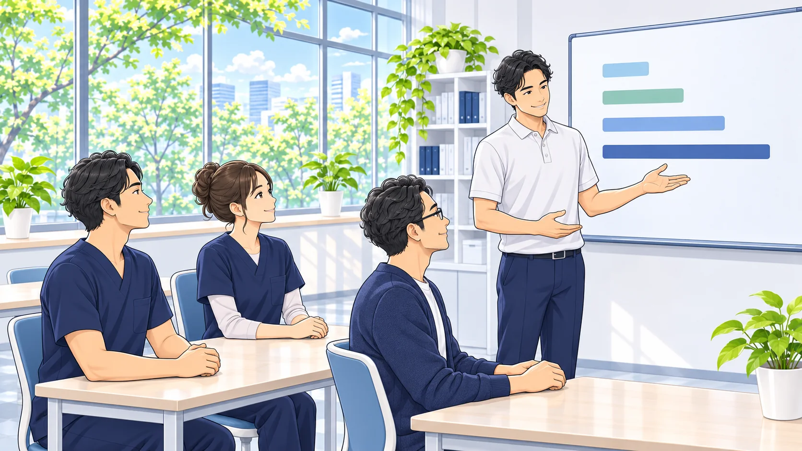
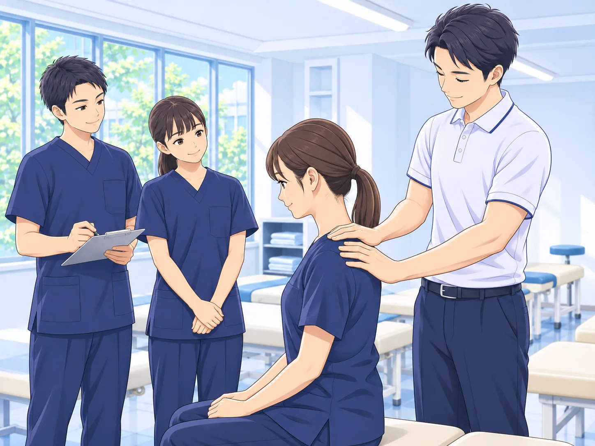

コース紹介
コース紹介・受講料
目指す未来に合わせて、3つのコースから。

| 比較項目 | プロ整体セラピストコース初級 | プロ整体師マスターコース初級＋中級 | 上級プロ整体師コース初級＋中級＋上級 |
|---|---|---|---|
| 最短卒業期間 | 約4か月 | 約6か月 | 約9か月 |
| 受講時間 合計 | 310時間 | 440時間 | 670時間 |
| 技術スクーリング | 180時間 | 280時間 | 480時間 |
| オンライン学習 | 30時間 | 60時間 | 90時間 |
| 費用 | 初級コース受講料：48万円（税抜） | 中級コース受講料：48万円（税抜） 初級＋中級一括申込：72万円（税抜） | 上級コース受講料：48万円（税抜） 初級＋中級＋上級一括申込：86万円（税抜） |
| インターン研修 | 100時間 | 100時間 | 100時間 |
※期間は最短の目安です。受講状況や習得状況により異なります。
※マスターは2コース一括、上級は3コース一括申込時の受講料（一括申込割引価格）です。認定試験料は別途必要です。

コース 01 / 初級
プロ整体セラピストコース
整体を基礎から学び、就職へ
全身を整えるウェルネス整体を中心に、身体の基礎知識と実践的な手技を習得。人の健康を支える仕事への第一歩に。
初級コース受講料：48万円（税抜）
※教育ローンをご利用いただけます。
別途、認定試験料 3万円
学ぶ内容
- ウェルネス整体・筋膜リリース
- 関節モビリゼーション・固有受容性神経筋促通法ストレッチ
- 一般医学・各種検査法
- 顧客満足・ホスピタリティ・プロフェッショナル教育
学習時間と認定
310総学習時間
- 取得を目指す認定
- プロ整体セラピスト認定証書
認定団体：特定非営利活動法人日本整体療法技術支援協会

コース 02 / 初級＋中級
プロ整体師マスターコース
専門技術を加え、施術の幅を広げる
整体の基礎にアクチベータテクニックをプラス。カイロプラクティックを学び、より専門性の高い施術者を目指します。
中級コース受講料：48万円（税抜）初級＋中級一括申込：72万円（税抜）
※教育ローンをご利用いただけます。
別途、認定試験料 5万円
学ぶ内容
- プロ整体セラピストコースの内容
- アクチベータ理論
- アクチベータの検査・技術
- 現場で活かせる中級技術
学習時間と認定
440総学習時間
- 取得を目指す認定
- プロ整体師認定証書
認定団体：特定非営利活動法人日本整体療法技術支援協会

コース 03 / 初級＋中級＋上級
上級プロ整体師コース
総合的な実践力を磨き、独立・開業へ
整体とカイロプラクティックの総合技術に加え、検査・施術計画・クライアント対応まで。独立開業につながる力を育てます。
上級コース受講料：48万円（税抜）初級＋中級＋上級一括申込：86万円（税抜）
※教育ローンをご利用いただけます。
別途、認定試験料 7万円
学ぶ内容
- 初級・中級コースの内容
- ディバーシファイド・頭蓋骨テクニック
- 四肢・美容テクニック・各種検査法
- 施術計画・クライアントレクチャー・ラポール形成
学習時間と認定
670総学習時間
- 取得を目指す認定
- 上級プロ整体師認定証書
認定団体：特定非営利活動法人日本整体療法技術支援協会